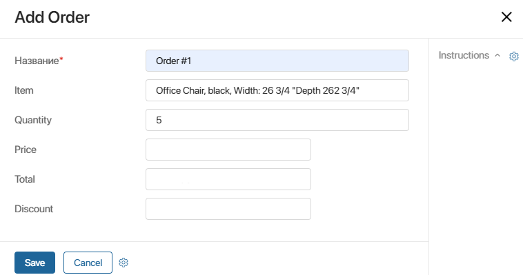
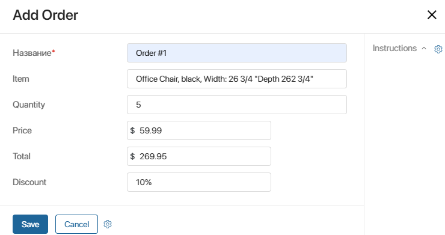

The layout of a task form or app item can change depending on the data that the user enters into the system in the process of work. This allows not to overload forms with fields and buttons. They are shown only when they are necessary. Forms that adjust to the user in this way are called dynamic forms.
How it works
Suppose a company sells office furniture. They keep track of all the client orders using a special app. Each order has its own page in the system that displays such information as Description, Quantity, Price, and Total.

If the total order amount is more than 250 USD, the company gives customers a discount. As soon as the sales rep specifies the Total amount of more than 250 USD, an additional Discount field will automatically appear on the page. The sales rep will write down the discount, and BRIX will calculate the total discounted amount.

Set up a dynamic form
Dynamic forms are configured using the Code widget. You can use this widget both on process task forms and app item forms.
The widget is added to the task form in the form editor. You can read more about it in the following articles: Forms tab and Interface designer. From them you can also learn how to set up a custom task form, and how to add and configure widgets in it.
The widget is added to the app item form in the advanced mode. In this mode, you can configure the layout of the page and create a custom template with widgets. Please note that only the creation and editing forms can be made dynamic since these are the forms used for the data input.
When you add the Code widget to a form, you can specify the necessary logic in it using scripts. For this purpose, it is recommended to read the following articles:
- “Code” widget. API for working with app item forms and forms in business processes.
- Scripts in TypeScript. Here you can find information about scripts for working with system objects and external pages.
начало внимание
Using Global or Namespace constants in scripts restricts the export of system components. Read more about it in the Global constants in scripts article.
конец внимание
Filters on a dynamic form
To simplify form filling for a user, you can set up the list of items that are available for selection in the App and Users type fields.
To do this, set filtering conditions using the Add filter option. For example, for the App type property, you can show only records created after a certain date, and in the Users type field, you can show employees from a specific group.